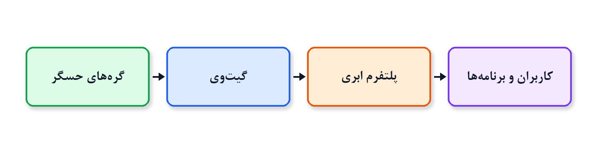
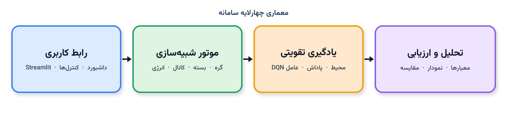
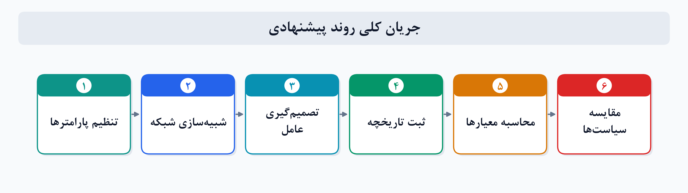

بهینهسازی مصرف انرژی در شبکههای اینترنت اشیا با یادگیری تقویتی عمیق
IoT Energy Optimization using Deep Reinforcement Learning (DQN)
دانشجو: امیرمحمد ذکاوتی | استاد راهنما: دکتر منیره عبدوس | دانشگاه شهید بهشتی
دانشکده مهندسی و علوم کامپیوتر DQN + Gymnasium
۱. مسئله و اهداف
گرههای حسگر با باتری محدود در هر گام باید بین ارسال و خواب یکی را انتخاب کنند. ارسالِ بیشتر داده را تازه نگه میدارد اما عمر شبکه را کوتاه میکند؛ خوابِ بیشتر انرژی را حفظ میکند اما سرویس پایش را از بین میبرد.
طبق Transforma Insights اتصالات جهانی IoT از حدود ۲۱ میلیارد (۲۰۲۵) به حدود ۴۸ میلیارد (۲۰۳۵) میرسد؛ بنابراین تصمیم تطبیقی ضروری است [1].

شکل ۱. لایه تمرکز پروژه: گرههای حسگر تا دروازهشکل ۲. سه ضلع مسئله: انرژی، تأخیر اطلاعاتی، اتلاف بسته
شبیهساز فاصلهآگاه با افت بسته و معیار AoI
آموزش عامل DQN در محیط Gymnasium
مقایسه با Always Transmit / Sleep / Random
داشبورد تعاملی Streamlit
۲. روش پیشنهادی

شکل ۳. معماری چهارلایه: رابط، شبیهسازی، یادگیری، تحلیل

شکل ۴. جریان اجرا از تنظیم پارامتر تا مقایسه سیاستها
هزینه ارسال با فاصله تا دروازه افزایش مییابد و انرژی تلاش ارسال حتی در صورت افت بسته مصرف میشود:
Etx(d) = ETX · [1 + w · (d / dref)2]
p(d) = clip(1 − λ · (d / dref), 0.45, 1)
مشاهده محیط ابعاد 2n+3 دارد (انرژی، حیات، زمان، نسبت دریافت، AoI). برای n ≤ 10 عمل بهصورت Discrete(2n) فشرده میشود تا با DQN سازگار باشد.